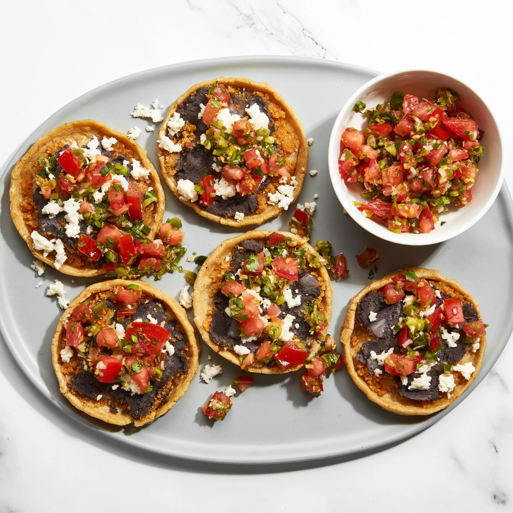

Memela (or tetela) is a popular street food dish originating from the Mexican state of Oaxaca. It is made from masa flour with the addition of refried beans, pressed together into a (usually oval-shaped) tortilla, then cooked on a hot grill. Once the tortilla is done, it is usually filled with red or green salsa, crumbly cheese such as quesillo, and additional toppings such as fries, nopale cactus, or avocado slices.
Meal prep time : 25 minutes
Servings : 9